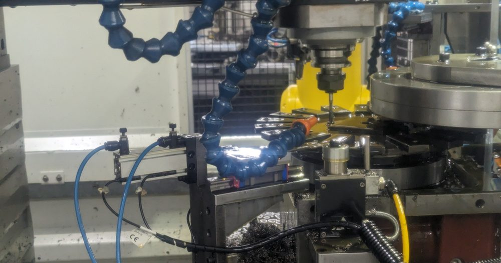

Vision-guided machine tending
Three-robot CNC tending system for bone screw operations
Designed and integrated a multi-operation cell with three robots tending three CNC lathes — a finished screw every ~50 s (~12× the prior process) at 95% uptime, using hierarchical robot state machines, safety integration, pneumatics, and inspection logic.
Read case study